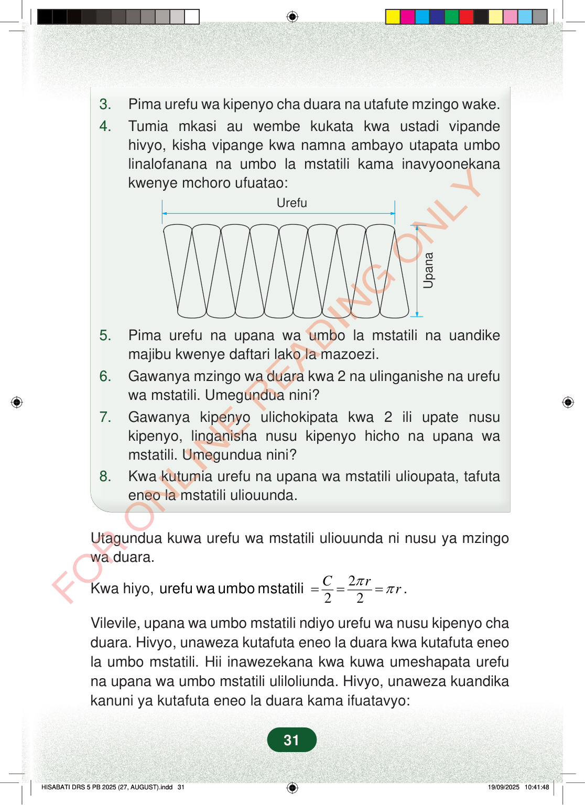

3.Pima urefu wa kipenyo cha duara na utafute mzingo wake.4.Tumia mkasi au wembe kukata kwa ustadi vipandehivyo, kisha vipange kwa namna ambayo utapata umbolinalofanana na umbo la mstatili kama inavyoonekanakwenye mchoro ufuatao:UrefuUpana5.Pima urefu na upana wa umbo la mstatili na uandikemajibu kwenye daftari lako la mazoezi.6.Gawanya mzingo wa duara kwa 2 na ulinganishe na urefuwa mstatili. Umegundua nini?7.Gawanya kipenyo ulichokipata kwa 2 ili upate nusukipenyo, linganisha nusu kipenyo hicho na upana wamstatili. Umegundua nini?8.Kwa kutumia urefu na upana wa mstatili ulioupata, tafutaeneo la mstatili uliouunda.Utagundua kuwa urefu wa mstatili uliouunda ni nusu ya mzingowa duara.Kwa hiyo,222Crrππ===urefu wa umbo mstatili.Vilevile, upana wa umbo mstatili ndiyo urefu wa nusu kipenyo chaduara. Hivyo, unaweza kutafuta eneo la duara kwa kutafuta eneola umbo mstatili. Hii inawezekana kwa kuwa umeshapata urefuna upana wa umbo mstatili uliloliunda. Hivyo, unaweza kuandikakanuni ya kutafuta eneo la duara kama ifuatavyo:31
3. Pima urefu wa kipenyo cha duara na utafute mzingo wake. 4. Tumia mkasi au wembe kukata kwa ustadi vipande hivyo, kisha vipange kwa namna ambayo utapata umbo linalofanana na umbo la mstatili kama inavyoonekana kwenye mchoro ufuatao:
Urefu
Upana
5. Pima urefu na upana wa umbo la mstatili na uandike majibu kwenye daftari lako la mazoezi. 6. Gawanya mzingo wa duara kwa 2 na ulinganishe na urefu wa mstatili. Umegundua nini? 7. Gawanya kipenyo ulichokipata kwa 2 ili upate nusu kipenyo, linganisha nusu kipenyo hicho na upana wa mstatili. Umegundua nini? 8. Kwa kutumia urefu na upana wa mstatili ulioupata, tafuta eneo la mstatili uliouunda.
Utagundua kuwa urefu wa mstatili uliouunda ni nusu ya mzingo wa duara.
Kwa hiyo, 2 2 2 C r r π π = = = urefu wa umbo mstatili .
Vilevile, upana wa umbo mstatili ndiyo urefu wa nusu kipenyo cha duara. Hivyo, unaweza kutafuta eneo la duara kwa kutafuta eneo la umbo mstatili. Hii inawezekana kwa kuwa umeshapata urefu na upana wa umbo mstatili uliloliunda. Hivyo, unaweza kuandika kanuni ya kutafuta eneo la duara kama ifuatavyo:
31
3.Pima urefu wa kipenyo cha duara na utafute mzingo wake.4.Vipande vya duara vimepangwa kwa kubadilishana na kutengeneza umbo la mstatili. Mshale wa juu unaonyesha urefu, na mshale wa pembeni unaonyesha upana.UrefuUpana5.Pima urefu na upana wa umbo la mstatili na uandike majibu kwenye daftari lako la mazoezi.6.Gawanya mzingo wa duara kwa 2 na ulinganishe na urefu wa mstatili.Umegundua nini?7.Utagundua kuwa urefu wa mstatili uliouunda ni nusu ya mzingo wa duara.Kwa hiyo, urefu wa umbo mstatili niC2=2πr2=πr.Vilevile, upana wa umbo mstatili ndiyo urefu wa nusu kipenyo cha duara.Hivyo, unaweza kutafuta eneo la duara kwa kutafuta eneo la umbo mstatili.Hii inawezekana kwa kuwa umeshapata urefu na upana wa umbo mstatili uliloliunda.Hivyo, unaweza kuandika kanuni ya kutafuta eneo la duara kama ifuatavyo: